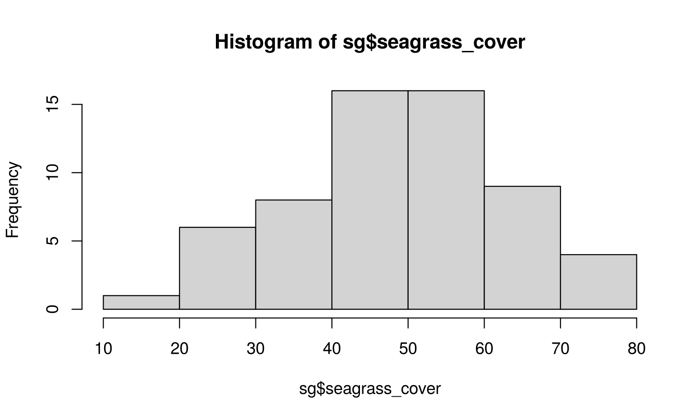
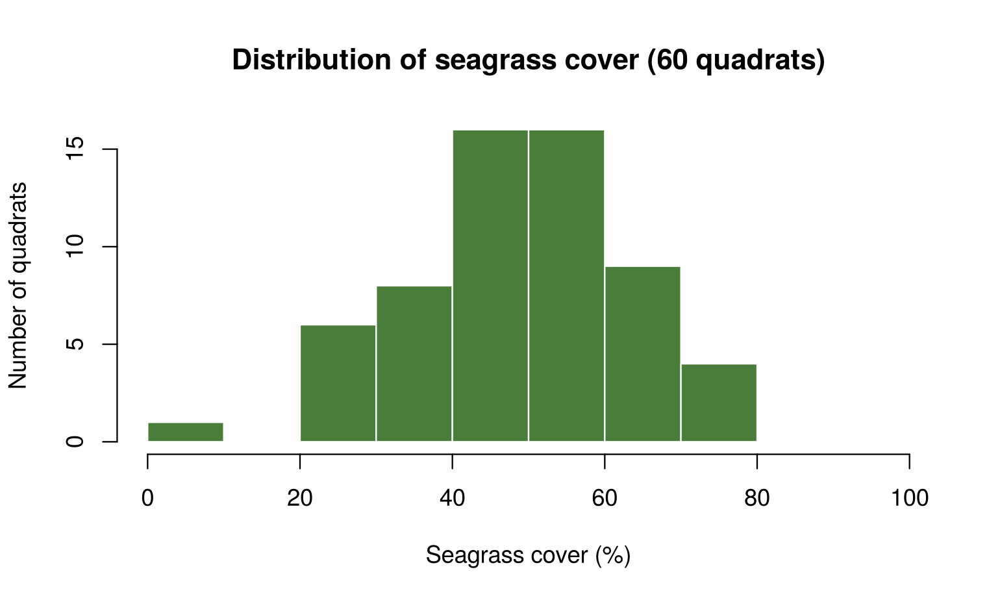
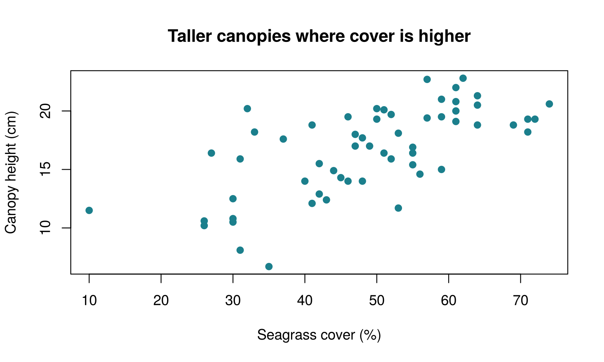
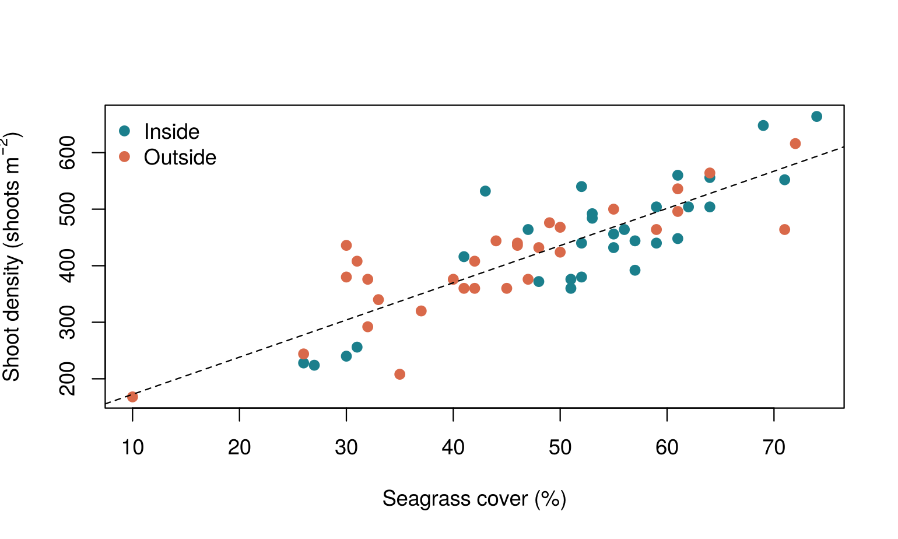
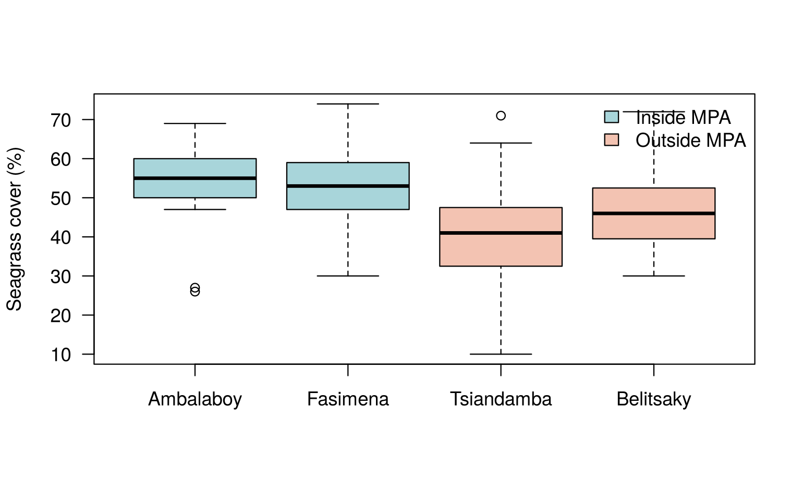
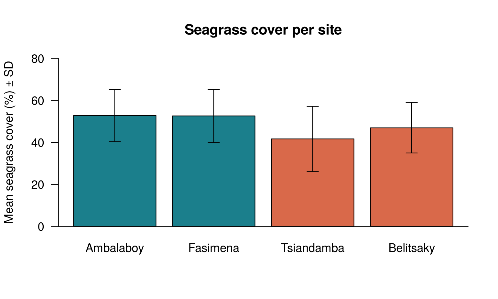
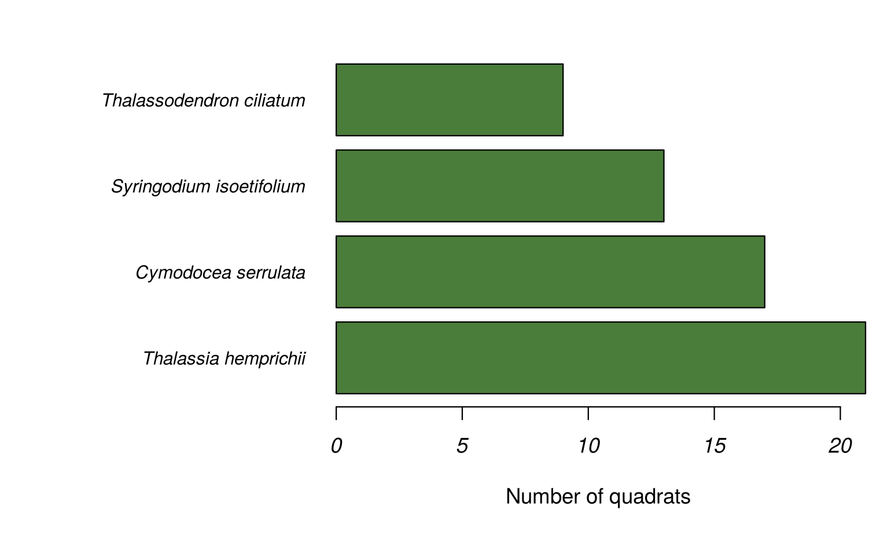
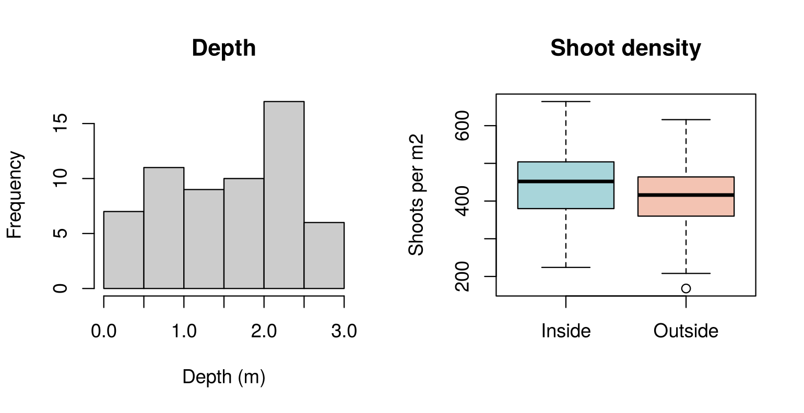

New script scripts/s06_graphics.R. Graphs appear in the
Plots pane; use the arrows to go back to previous plots
and Zoom to enlarge.
Nouveau script scripts/s06_graphics.R. Les graphiques
apparaissent dans le panneau Plots ; utilisez les
flèches pour revenir aux précédents et Zoom pour
agrandir.
| Question | Graph | Base R function |
|---|---|---|
| How are the values of one variable distributed? | histogram | hist() |
| Are two numeric variables related? | scatter plot | plot(x, y) |
| How do values differ between groups? | boxplot | boxplot(y ~ group) |
| How do group means compare? | barplot (+ error bars) | barplot() + arrows() |
| How many observations per category? | barplot of counts | barplot(table(x)) |
| Question | Graphique | Fonction R de base |
|---|---|---|
| Comment se distribuent les valeurs d’une variable ? | histogramme | hist() |
| Deux variables numériques sont-elles liées ? | nuage de points | plot(x, y) |
| Comment les valeurs diffèrent-elles entre groupes ? | boxplot | boxplot(y ~ groupe) |
| Comment se comparent les moyennes des groupes ? | barres (+ barres d’erreur) | barplot() + arrows() |
| Combien d’observations par catégorie ? | barres d’effectifs | barplot(table(x)) |

Readable, but the default title and labels are not report-quality.
Almost every plotting function accepts the same arguments:
main (title), xlab, ylab (axis
labels), col (fill colour), border,
xlim, ylim (axis limits).
Lisible, mais le titre et les étiquettes par défaut ne sont pas
dignes d’un rapport. Presque toutes les fonctions graphiques acceptent
les mêmes arguments : main (titre), xlab,
ylab (étiquettes des axes), col (couleur de
remplissage), border, xlim, ylim
(limites des axes).
hist(sg$seagrass_cover,
breaks = seq(0, 100, by = 10), # classes of 10 %
col = "#4a7d3a", border = "white",
main = "Distribution of seagrass cover (60 quadrats)",
xlab = "Seagrass cover (%)", ylab = "Number of quadrats")
plot(sg$seagrass_cover, sg$canopy_height_cm,
pch = 19, # point shape: 19 = filled circle
col = "#1b7f8c",
xlab = "Seagrass cover (%)", ylab = "Canopy height (cm)",
main = "Taller canopies where cover is higher")
Colour points by group: create a vector of colours, one per row, using the group as an index.
Colorer les points par groupe : on crée un vecteur de couleurs, une par ligne, en utilisant le groupe comme index.
cols <- c(Inside = "#1b7f8c", Outside = "#d9694a") # a named vector
plot(sg$seagrass_cover, sg$shoot_density, pch = 19,
col = cols[sg$mpa_status], # picks "Inside" or "Outside" colour for each row
xlab = "Seagrass cover (%)", ylab = expression("Shoot density (shoots m"^-2*")"))
legend("topleft", legend = names(cols), col = cols, pch = 19, bty = "n")
abline(lm(shoot_density ~ seagrass_cover, data = sg), lty = 2) # add a trend line
abline(), points(), lines(),
text(), legend() and arrows()
add to the current plot; they do not create a new one.
Build a figure layer by layer: first the plot, then the additions.
abline(), points(), lines(),
text(), legend() et arrows()
ajoutent au graphique en cours ; ils n’en créent pas de
nouveau. On construit une figure couche par couche : d’abord le
graphique, puis les ajouts.
A boxplot shows the median (thick line), the quartiles (box = middle 50 % of the values), the range (whiskers) and possible outliers (points). It is the best quick way to compare groups.
Un boxplot montre la médiane (trait épais), les quartiles (boîte = 50 % centraux des valeurs), l’étendue (moustaches) et d’éventuelles valeurs extrêmes (points). C’est la meilleure façon rapide de comparer des groupes.
sg$site <- factor(sg$site, levels = c("Ambalaboy", "Fasimena", "Tsiandamba", "Belitsaky")) # MPA sites first
boxplot(seagrass_cover ~ site, data = sg,
col = c("#a8d5da", "#a8d5da", "#f3c3b2", "#f3c3b2"),
xlab = "", ylab = "Seagrass cover (%)", las = 1) # las = 1: horizontal axis numbers
legend("topright", fill = c("#a8d5da", "#f3c3b2"), legend = c("Inside MPA", "Outside MPA"), bty = "n")
This is the figure you will produce in the final project. Three
steps: (1) compute means and SD per group, (2) draw the bars and
keep their positions, (3) add error bars with
arrows().
C’est la figure que vous produirez dans le projet final. Trois étapes
: (1) calculer moyennes et ET par groupe, (2) tracer les barres en
gardant leurs positions, (3) ajouter les barres
d’erreur avec arrows().
# 1. statistics per site
m <- tapply(sg$seagrass_cover, sg$site, mean)
s <- tapply(sg$seagrass_cover, sg$site, sd)
# 2. barplot() returns the x position of the centre of each bar
bp <- barplot(m, ylim = c(0, 80),
col = c("#1b7f8c", "#1b7f8c", "#d9694a", "#d9694a"),
ylab = "Mean seagrass cover (%) ± SD", las = 1,
main = "Seagrass cover per site")
# 3. error bars: an arrow from (mean - sd) to (mean + sd) with flat heads
arrows(x0 = bp, y0 = m - s, x1 = bp, y1 = m + s,
angle = 90, # 90 degrees = flat head
code = 3, # heads at both ends
length = 0.08) # head width
box(bty = "l") # L-shaped axis line
Always set ylim so that the top error
bar fits: ylim = c(0, max(m + s) * 1.1) is a safe automatic
choice. Without it, error bars may be cut off.
Fixez toujours ylim pour que la barre
d’erreur la plus haute tienne :
ylim = c(0, max(m + s) * 1.1) est un choix automatique sûr.
Sans cela, les barres d’erreur peuvent être coupées.
counts <- sort(table(sg$species), decreasing = TRUE)
par(mar = c(5, 13, 2, 1)) # enlarge the left margin for long names (bottom, left, top, right)
barplot(counts, horiz = TRUE, las = 1, col = "#4a7d3a", xlab = "Number of quadrats",
names.arg = names(counts), cex.names = 0.85, font.axis = 3) # font 3 = italic
par(mfrow = c(rows, columns)) splits the drawing area.
Reset it with par(mfrow = c(1, 1)).
par(mfrow = c(lignes, colonnes)) découpe la zone de
dessin. Réinitialisez-la avec par(mfrow = c(1, 1)).
par(mfrow = c(1, 2))
hist(sg$depth_m, col = "grey80", main = "Depth", xlab = "Depth (m)")
boxplot(shoot_density ~ mpa_status, data = sg, main = "Shoot density",
xlab = "", ylab = "Shoots per m2", col = c("#a8d5da", "#f3c3b2"))
The Export button of the Plots pane works, but code is
reproducible. Three steps: open a file device,
draw, close it with
dev.off(). Nothing appears on screen while the file is
open.
Le bouton Export du panneau Plots fonctionne, mais le code
est reproductible. Trois étapes : ouvrir un fichier
graphique, dessiner, le fermer avec
dev.off(). Rien ne s’affiche à l’écran tant que le fichier
est ouvert.
png("outputs/fig_cover_by_site.png", width = 16, height = 11, units = "cm", res = 300)
boxplot(seagrass_cover ~ site, data = sg, ylab = "Seagrass cover (%)", xlab = "")
dev.off() # closes the file: the PNG is written now
pdf("outputs/fig_cover_by_site.pdf", width = 6.3, height = 4.3) # size in inches
boxplot(seagrass_cover ~ site, data = sg, ylab = "Seagrass cover (%)", xlab = "")
dev.off()res = 300 (dots per inch) is the usual resolution
required by journals and printed reports. PDF is a vector format: it
stays sharp at any zoom.
res = 300 (points par pouce) est la résolution
habituellement demandée par les revues et les rapports imprimés. Le PDF
est un format vectoriel : il reste net à tout niveau de zoom.
With seagrass_quadrats.csv, produce and save in
outputs/ (PNG, 300 dpi):
breaks = seq(0, 100, by = 10)). How many quadrats are in
the most frequent class? (look at h <- hist(...) then
h$counts)Avec seagrass_quadrats.csv, produisez et
enregistrez dans outputs/ (PNG, 300 dpi)
:
breaks = seq(0, 100, by = 10)). Combien de quadrats
contient la classe la plus fréquente ? (regardez
h <- hist(...) puis h$counts)sg <- read.csv("data/seagrass_quadrats.csv")
# 1. Histogram
png("outputs/s06_hist.png", width = 16, height = 11, units = "cm", res = 300)
h <- hist(sg$seagrass_cover, breaks = seq(0, 100, by = 10), col = "#4a7d3a",
border = "white", main = "", xlab = "Seagrass cover (%)", ylab = "Quadrats")
dev.off()
h$counts # counts per class: find the largest one
# 2. Boxplot by site
png("outputs/s06_boxplot.png", width = 16, height = 11, units = "cm", res = 300)
boxplot(seagrass_cover ~ site, data = sg, xlab = "", ylab = "Seagrass cover (%)")
dev.off()
tapply(sg$seagrass_cover, sg$site, median)
# 3. Mean +/- SD by MPA status
m <- tapply(sg$seagrass_cover, sg$mpa_status, mean)
s <- tapply(sg$seagrass_cover, sg$mpa_status, sd)
png("outputs/s06_barplot_status.png", width = 12, height = 11, units = "cm", res = 300)
bp <- barplot(m, ylim = c(0, max(m + s) * 1.1), col = c("#1b7f8c", "#d9694a"),
ylab = "Mean seagrass cover (%) ± SD", las = 1)
arrows(bp, m - s, bp, m + s, angle = 90, code = 3, length = 0.08)
dev.off()
round(max(m + s), 1)
# 4. Mean cover per species
msp <- sort(tapply(sg$seagrass_cover, sg$species, mean))
par(mar = c(5, 13, 2, 1))
barplot(msp, horiz = TRUE, las = 1, col = "#4a7d3a", xlab = "Mean seagrass cover (%)")
par(mar = c(5, 4, 4, 2) + 0.1)